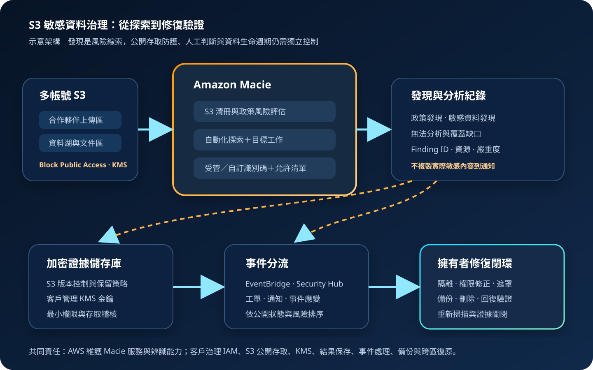

Amazon Macie：S3 敏感資料探索與風險治理
Amazon Macie 維護 Amazon S3 一般用途儲存貯體的安全清冊，辨識公開存取與權限風險，並以受管或自訂資料識別碼探索敏感資料。它提供資料風險線索與分析紀錄，但不會自動修正權限、刪除資料、完成法規判定或取代完整的資料治理制度。
作者：Dr. William｜查閱與發布：2026-11-05
服務定位
Amazon Macie 是資料安全與隱私服務。啟用後，Macie 會在目前 AWS 區域建立並維護 S3 一般用途儲存貯體清冊，評估公開存取、加密與存取控制狀態，並在偵測到降低安全或隱私的設定時產生政策發現。
敏感資料探索有兩條路徑：自動化敏感資料探索會持續評估 S3 清冊並抽樣代表性物件；敏感資料探索工作則由團隊明確指定儲存貯體、條件、頻率、抽樣深度與資料識別碼。Macie 以模式比對與機器學習辨識個人、醫療、金融、憑證及自訂類型資料。
核心概念與服務邊界
清冊、探索與發現
- S3 清冊：彙整儲存貯體區域、物件數、容量、加密、公開存取及可分析物件資訊。
- 政策發現：指出 S3 公開、共享或權限設定造成的資料安全風險。
- 敏感資料發現：指出物件中的憑證、金融、個人、醫療或自訂敏感資料類別與出現次數。
- 受管資料識別碼：由 AWS 維護常見敏感資料型態的偵測條件。
- 自訂資料識別碼：以正規表示式、關鍵字與距離規則辨識組織特有格式。
- 允許清單：排除已知且合理的字串或模式，降低誤報。
紀錄、整合與治理
- 探索結果：每個已分析、未發現或無法分析的物件都有分析紀錄；長期保存需匯出至 S3。
- 區域性：啟用、清冊、結果儲存庫與多帳號管理都要逐區域規劃。
- Organizations：可指定委派管理員集中管理成員帳號與 S3 資料風險。
- EventBridge：Macie 自動發布政策與敏感資料發現事件，可觸發通知與處理流程。
- Security Hub CSPM：可接收 Macie 發現，納入跨服務安全態勢管理。
- 90 天窗口：Macie 保存發現與探索結果的服務內期間有限，長期稽核必須另建保存策略。
適合與不適合的使用情境
適合
- 組織需要盤點多帳號、多區域 S3 中可能存在的個資、醫療、金融或憑證資料。
- 資料湖、文件交換區、上傳區或備份區需要持續發現公開存取與敏感資料組合風險。
- 需要針對特定專案、併購、稽核或資料移轉執行一次性或週期性分類工作。
- 需要把高風險發現送往 EventBridge、Security Hub CSPM、工單或事件應變流程。
- 需要以自訂資料識別碼辨識病歷號、會員編號、內部案件編號等組織特有格式。
不適合或不能單獨完成
- 直接掃描非 S3 服務中的即時資料，而沒有受控的 S3 匯出流程。
- 期待服務自動封鎖公開存取、修改 bucket policy、隔離物件或刪除敏感資料。
- 把「未產生發現」解讀為沒有敏感資料；不支援格式、無權限物件、抽樣與辨識邊界都可能造成缺口。
- 只需要惡意程式掃描、端點防護、網路入侵偵測或資料庫活動監控。
- 尚未定義資料擁有者、風險分級、例外核准、修復時限與證據保存程序。
示意故事案例：合作夥伴上傳區的敏感資料治理
以下為示意案例，不代表特定企業或正式部署。 一家提供線上服務的企業讓合作夥伴把對帳檔案上傳到各自 AWS 帳號的 S3 儲存貯體。部分檔案含姓名、聯絡資訊與交易資料，另有少數測試人員曾把設定檔與疑似憑證內容一併上傳。團隊原本只檢查儲存貯體是否公開，沒有持續回答「哪些物件含敏感資料」與「誰負責修正」。
新流程在安全帳號設置 Macie 委派管理員，逐區域納管成員帳號。自動化探索先建立廣度視野；針對合作夥伴上傳區，再建立每日增量工作與專案自訂資料識別碼。探索結果匯出至啟用版本控制、S3 Block Public Access 與 KMS 加密的證據儲存貯體。
高風險發現透過 EventBridge 送入處理流程：先確認物件、儲存貯體公開狀態、加密與資料擁有者，再由資料擁有者決定隔離、替換、遮罩或刪除。系統只傳遞 finding ID、資源識別與風險分類，不把實際敏感內容複製到通知、聊天或工單。

建置與運作流程
- 盤點資料範圍：列出帳號、區域、S3 儲存貯體、資料擁有者、資料類別、保存期限與法規要求。
- 建立管理邊界：在 AWS Organizations 指定 Macie 委派管理員；管理帳號不直接承擔日常分析作業。
- 逐區域啟用：確認需要納管的區域與帳號，避免只在單一區域建立不完整視野。
- 設定最小權限：人員使用 IAM Identity Center、MFA 與短期憑證；自動化使用角色，不建立非必要長期 Access Key。
- 建立結果儲存庫：指定專用 S3 儲存貯體與客戶管理 KMS 金鑰，限制 Macie 寫入、稽核讀取與刪除權限。
- 保護公開存取：啟用帳號與儲存貯體層級 S3 Block Public Access，除非經正式例外核准。
- 啟用廣度探索：以自動化敏感資料探索建立基準，排除明確不需分析且風險已知的日誌或測試儲存貯體。
- 建立深度工作：依業務資料、標籤、前綴、物件建立時間與頻率建立目標工作；抽樣比例須記錄風險理由。
- 調整識別條件：選擇受管資料識別碼，建立經測試的自訂識別碼與允許清單，使用無真實敏感內容的測試樣本。
- 整合事件流程：以 EventBridge 依嚴重度、資料類別、公開狀態、帳號與標籤路由到通知、Lambda 或工單系統。
- 集中安全態勢：需要跨服務分析時發布至 Security Hub CSPM，並定義重複發現與狀態同步規則。
- 建立修復程序：資料擁有者確認真偽後，執行隔離、權限修正、重新加密、遮罩、替換或刪除，並保留核准證據。
- 監控服務操作：以 CloudTrail 稽核 Macie 設定、工作與結果儲存庫變更；以 CloudWatch 與事件指標監控失敗與積壓。
- 驗證覆蓋率：定期檢查無權限、不支援格式、封存層、KMS 解密失敗、未納管帳號與區域。
- 演練復原：備份並保護事件規則、KMS 金鑰政策、結果儲存庫設定、識別碼定義與修復手冊。
成本、可用性與維運考量
Macie 成本主要由三個維度構成：持續評估的 S3 儲存貯體數量、自動化探索監控的 S3 物件數量，以及自動化或目標工作實際檢查的資料量。EventBridge、Security Hub CSPM、Lambda、SNS、S3、KMS、CloudTrail、跨區複寫與工單整合另行計費。
成本估算不能只看 S3 總容量。壓縮檔解壓後的分析量、物件數、支援格式、工作頻率、抽樣深度、重複掃描與多區域資料都會影響費用。應先用小範圍工作驗證識別品質，再依風險擴大；低風險且內容高度一致的資料可評估抽樣，但必須記錄抽樣不能證明每個物件都安全。
Macie 是區域性服務，偵測與事件處理依賴 S3、KMS、EventBridge、Security Hub CSPM 及下游系統。可用性設計應避免單一路由或單一人員成為瓶頸，並確保即使 Macie 或下游整合暫時不可用，S3 的 Block Public Access、KMS 加密、版本控制、備份與權限邊界仍持續有效。
Amazon Macie 特有資安風險與控制
- 把探索當成預防：Macie 提供發現與紀錄，不替代 S3 Block Public Access、bucket policy、SCP、資料分類入口控制與安全上傳流程。
- 只有管理員看得到：集中管理時，部分自動化探索發現由 Macie 管理員直接存取；必須建立成員帳號可追蹤的分派與回報流程。
- 掃描覆蓋錯覺：對不支援格式、封存儲存層、權限不足、KMS 解密失敗或抽樣未選中的物件建立缺口報表。
- 誤報與漏報：以去識別測試資料量測受管與自訂識別碼，審查正規表示式、關鍵字距離與允許清單，不以單次結果定案。
- 發現內容二次外洩：通知與工單只放 finding ID、資源與風險資訊，不複製實際個資、憑證片段或敏感資料樣本。
- 結果儲存庫成為高價值目標：啟用 S3 Block Public Access、版本控制、KMS 客戶管理金鑰、最小權限、保留策略與存取告警。
- KMS 政策過寬：限制 Macie 服務主體、來源帳號與來源 ARN，將管理、使用、稽核與刪除金鑰職責分離。
- 公開存取與敏感資料同時存在：以 EventBridge 優先處理高嚴重度且公開的儲存貯體或物件，並設定明確修復時限。
- 自訂識別碼洩漏內部規則：只有核准角色可建立或修改，變更需審查；名稱與描述不可放真實資料、密碼或其他機密。
- 長期 IAM 憑證：人員使用 MFA 與短期憑證，工作負載使用角色；任何 credential、Access Key、Secret Key、Token、密碼或 cookie 都不得寫入程式碼、工作參數或公開文件。
- 區域與帳號遺漏：以 Organizations、Config 或資產清冊對照 Macie 啟用狀態，對新帳號與新區域建立自動檢查。
- 事件自動化破壞資料：自動隔離或刪除前須驗證業務影響、版本控制、備份與回復路徑；高風險動作保留人工核准。
- 只保存 90 天：將發現與探索結果依稽核要求匯出、加密與保存，並測試查詢、完整性與到期刪除。
- 資料匯出擴大攻擊面：從資料庫或其他服務匯出至 S3 供分析時，使用專用位置、短保存期、KMS 加密、網路與存取限制，完成後驗證刪除。
共同責任邊界
AWS 負責 Macie 服務底層基礎設施、服務軟體、受管資料識別能力、服務內資料加密、S3 中繼資料評估，以及 Macie 與 S3 之間的受管私有服務通訊。AWS 也提供 IAM、KMS、CloudTrail、EventBridge、Security Hub CSPM 與 Organizations 等控制能力。
客戶負責決定納管帳號、區域與 S3 範圍，設定 IAM 最小權限、MFA／短期憑證、S3 公開存取阻擋、KMS 金鑰政策、結果儲存庫、識別碼與允許清單、EventBridge 路由、CloudTrail／CloudWatch 監控、資料擁有者與修復程序。Secrets Manager／Parameter Store 用於應用機密，不應把機密值放入 Macie 名稱、標籤、通知或公開文件。備份、跨區復原、法規判定與資料生命週期仍由客戶治理。
上線與維運可執行檢查清單
- □ 已列出所有需納管的 AWS 帳號、區域、S3 儲存貯體、資料擁有者與保存期限。
- □ 已指定獨立的 Macie 委派管理員，並確認管理帳號不承擔不必要的日常操作。
- □ 人員使用 IAM Identity Center、MFA 與短期憑證，沒有非必要長期 Access Key。
- □ Macie 管理、工作建立、識別碼變更、結果讀取、修復與稽核角色已分離。
- □ 帳號與儲存貯體層級 S3 Block Public Access 已啟用，例外均有核准與到期日。
- □ S3 資料預設加密已啟用，高敏感資料與結果儲存庫使用核准的 KMS 金鑰。
- □ 結果儲存庫已啟用版本控制、保留策略、最小權限與刪除保護。
- □ KMS 金鑰政策限制服務主體、來源帳號與來源 ARN，且管理與使用權限分離。
- □ 自動化探索的排除儲存貯體均有風險理由、資料擁有者與定期複核日期。
- □ 目標工作的儲存貯體、前綴、標籤、頻率與抽樣深度符合資料風險。
- □ 受管與自訂資料識別碼已使用去識別樣本測試，允許清單不會排除真正敏感資料。
- □ 無法分析物件、不支援格式、封存層與 KMS 權限錯誤都有例外清冊與替代控制。
- □ EventBridge 依嚴重度、公開狀態、帳號、資料類別與擁有者正確路由。
- □ 通知、聊天與工單不包含敏感資料樣本、credential、Token、密碼或 cookie。
- □ 高風險且公開的發現有明確修復時限、升級路徑與值班責任。
- □ 自動修復不會未經核准刪除關鍵資料，且具版本、備份與回復路徑。
- □ CloudTrail 已記錄 Macie、S3、KMS、EventBridge 與結果儲存庫的管理變更。
- □ CloudWatch 或等同監控可辨識工作失敗、事件積壓、處理錯誤與通知失效。
- □ 發現與探索結果已依稽核需求長期保存，並驗證可查詢性、完整性與到期刪除。
- □ 已定期核對 Organizations 帳號清冊與 Macie 啟用狀態，避免新帳號漏管。
- □ 已演練 KMS 金鑰停用、結果寫入失敗、EventBridge 路由失效與下游工單中斷。
- □ 非 S3 資料的匯出分析副本有專用位置、加密、短保存期與可驗證刪除程序。
- □ 修復後會重新檢查 S3 權限、加密與敏感資料狀態，並關閉對應發現與工單。
AWS 官方一手來源
- Monitoring data security and privacy with Macie（查閱：2026-11-05）
- Discovering sensitive data with Macie（查閱：2026-11-05）
- Performing automated sensitive data discovery（查閱：2026-11-05）
- Scope options for sensitive data discovery jobs（查閱：2026-11-05）
- Reviewing and analyzing Macie findings（查閱：2026-11-05）
- Types of Macie findings（查閱：2026-11-05）
- Storing and retaining sensitive data discovery results（查閱：2026-11-05）
- Monitoring and processing Macie findings（查閱：2026-11-05）
- Managing multiple Macie accounts with AWS Organizations（查閱：2026-11-05）
- Data protection in Macie（查閱：2026-11-05）
- Amazon Macie pricing（查閱：2026-11-05）
- AWS Shared Responsibility Model（查閱：2026-11-05）
內容說明
本文依查閱日可用的 AWS 官方文件整理，作為基礎學習與架構討論材料；實際部署仍須依最新區域、支援格式、儲存類別、配額、定價、資料分類政策、法規要求、誤報測試與事件演練結果調整。